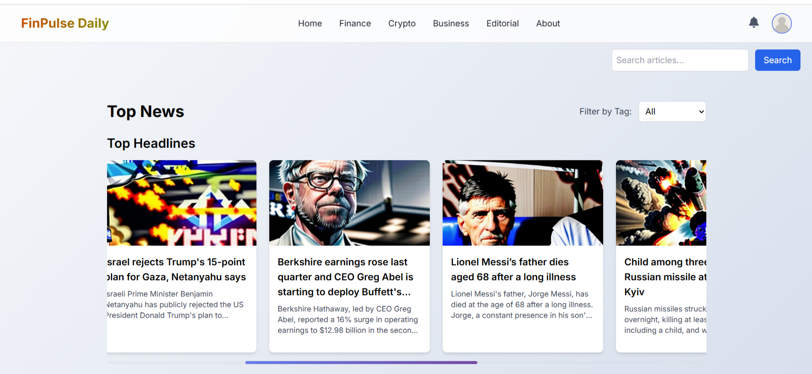
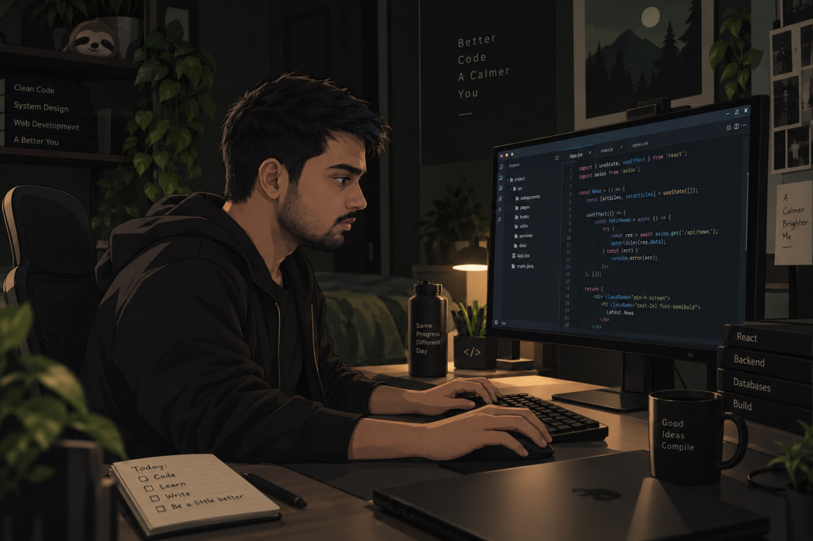
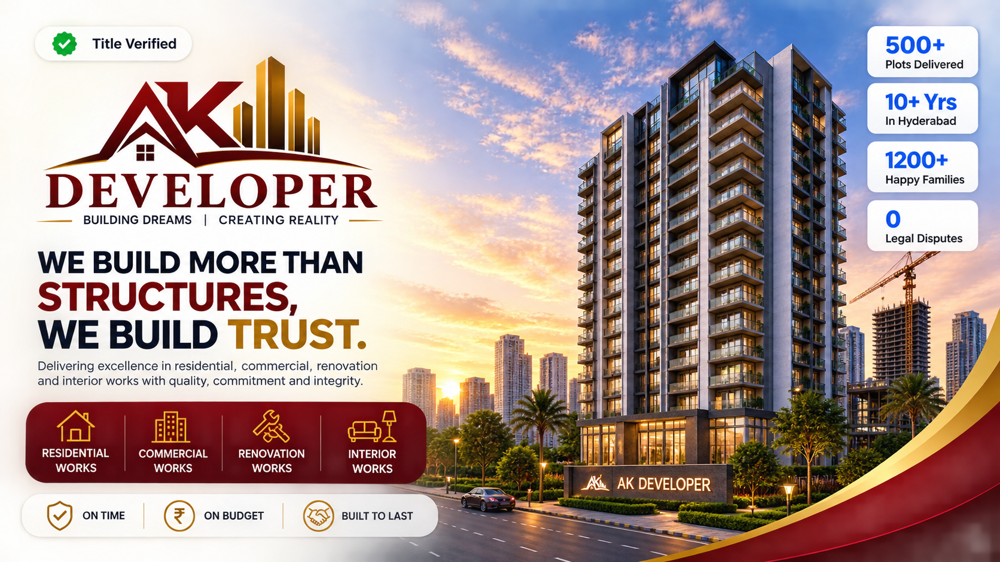
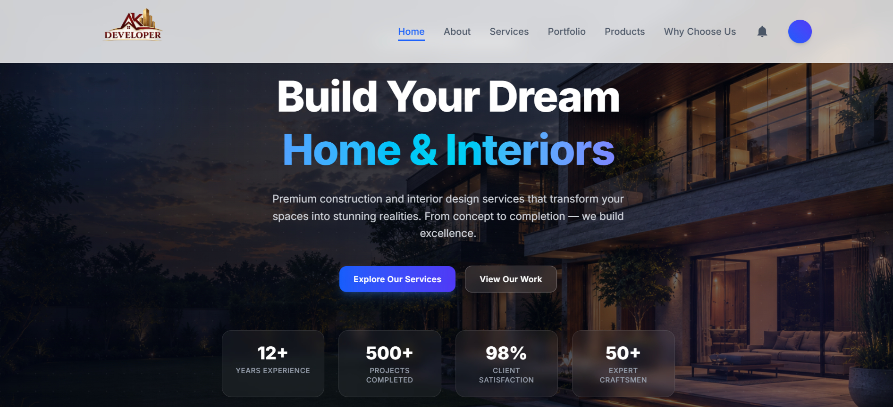

Project Newzz
An automated news pipeline that scrapes, summarizes, and classifies articles, then generates AI images and publishes the result — built to demonstrate automation and AI-integration skills end to end.
View detailsFreelance Fullstack Developer
I work under the pen name Sloth. Real projects, not tutorials including a real-estate platform built for a business and Project Newzz, an automated news and AI image pipeline. I take an idea from a rough concept to a working application, without cutting corners along the way.

Selected work
Three projects that show range — automation, real-estate, and construction industry sites.

An automated news pipeline that scrapes, summarizes, and classifies articles, then generates AI images and publishes the result — built to demonstrate automation and AI-integration skills end to end.
View details
A modern real-estate website showcasing premium properties across Hyderabad's fast-developing locations, with property discovery, location insights, and direct enquiry flows.
View details
A clean, credibility-first website for a construction business — built to make the company's work easy to browse and easy to enquire about.
View detailsWhy work with me
I've built and worked on real-world software for businesses — not just tutorial projects — and I'm comfortable taking a rough concept and turning it into something people can actually use.
I work across the full stack, from interface to database, and I care about the details that make a site feel considered: performance, clarity, and a design that respects the people using it.
Get in touch
Tell me what you're building — I'll tell you honestly whether it's a good fit.
Start a conversation